Section 1
qFlipper After Update
Once FoxFW has been installed, qFlipper reflects the new firmware details — build date, database status, and radio firmware version.
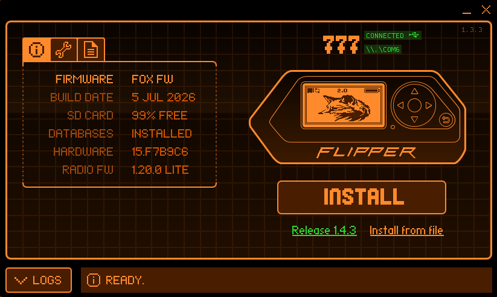
Section 3
SubGHz App New
FoxFW's expanded Sub-GHz tooling — protocol selection, the modulation list, RF Jammer, Garage Remote, and the Modulation Analyzer in action.
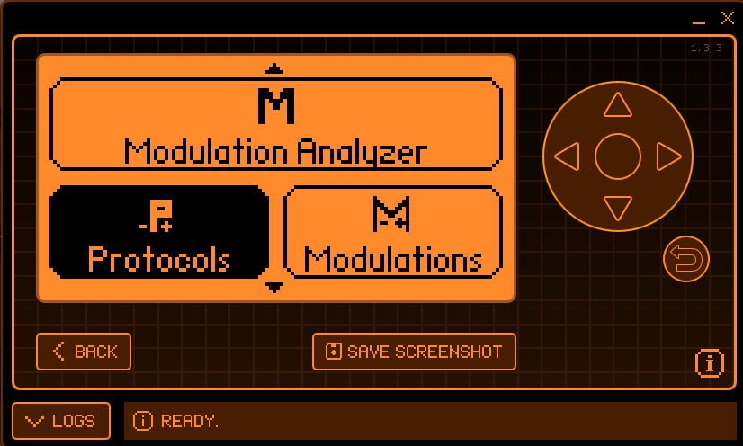
Protocol List
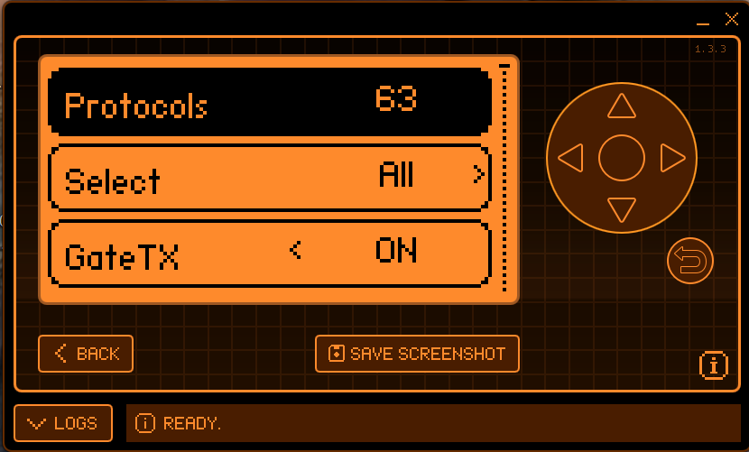
Modulation Analyzer & Protocols
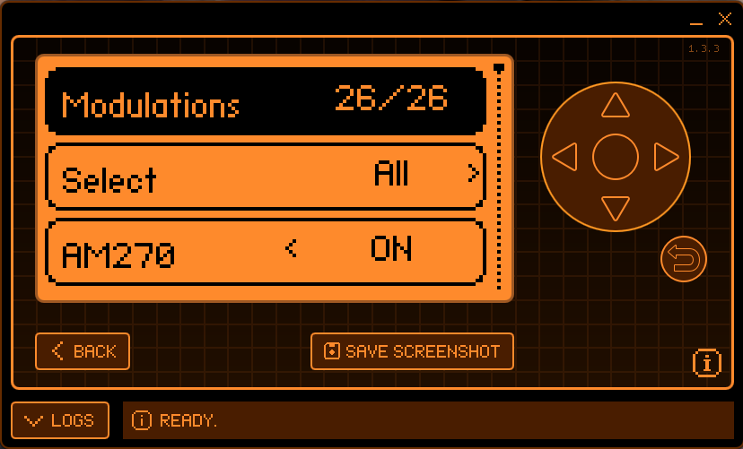
Modulations List
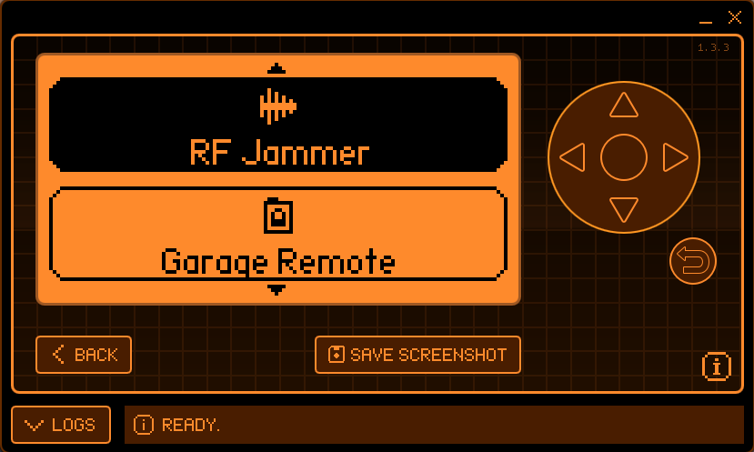
RF Jammer & Garage Remote
Modulation Analyzer — Live Scan
Section 4
Fox Settings & Security
The Settings hub alongside the PIN, Security & Privacy, and Advanced Security screens.
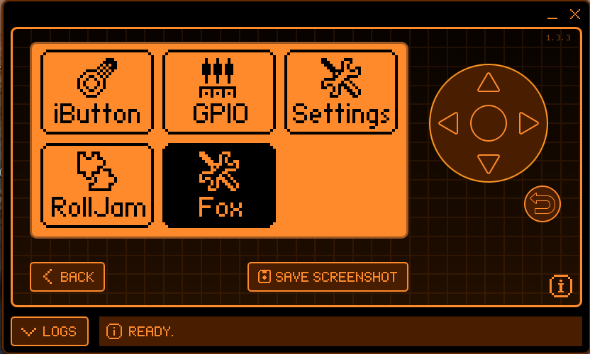
Settings Menu
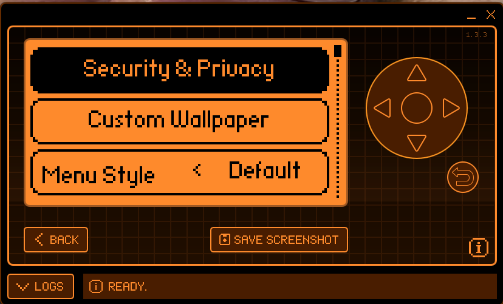
Security & Privacy
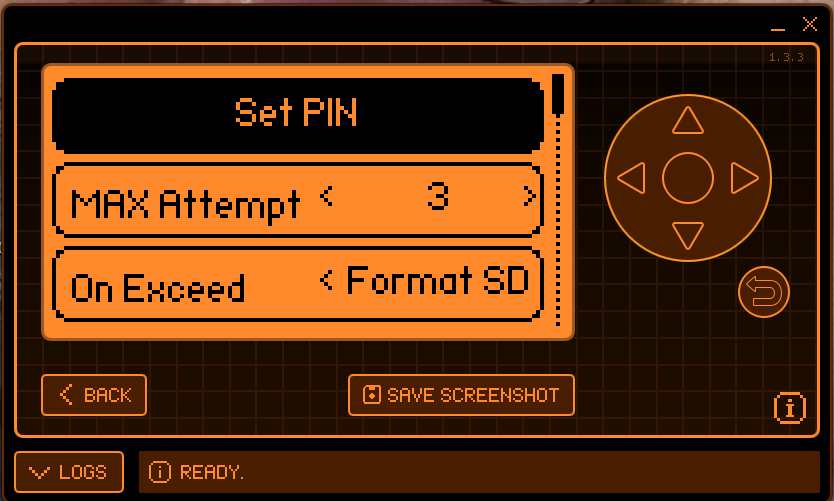
Set PIN
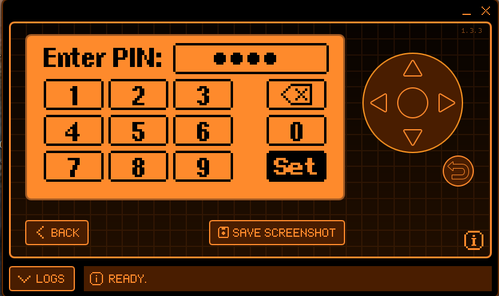
Enter PIN
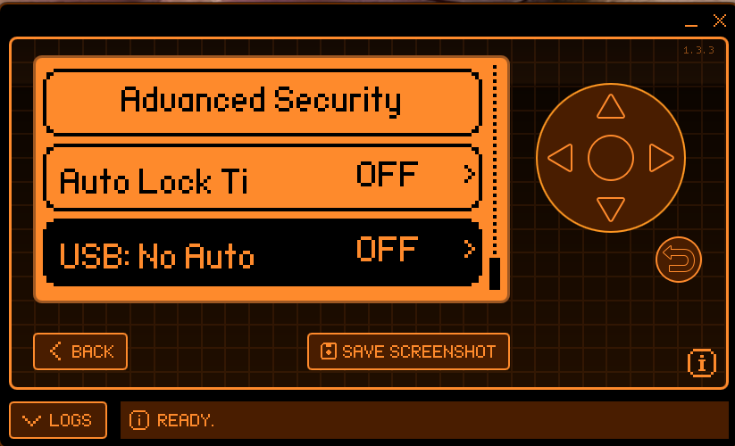
Advanced Security
Section 5
Custom Wallpaper
Custom Wallpaper toggled on with a valid wallpaper.xbm detected,
the default logo placeholder, and back to the Apps menu.
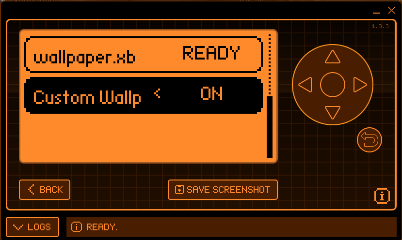
Custom Wallpaper — Enabled
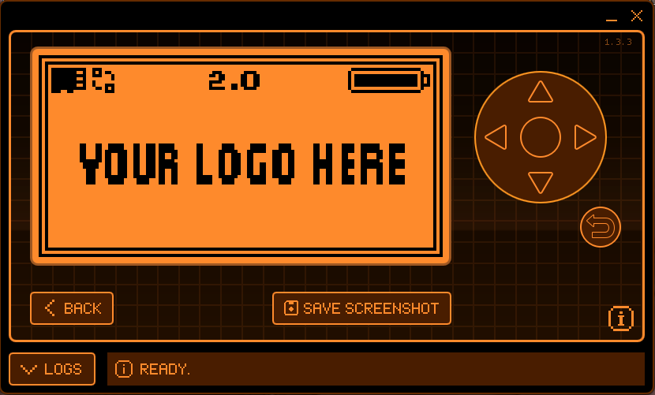
Default Logo Wallpaper
Apps Menu